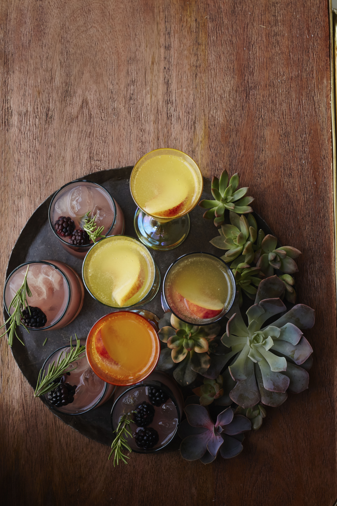

Peach Ginger Bellini

Ingredients
- 2 packages frozen unsweetened sliced peaches
- 1/2 cup ginger syrup, or more to taste
- 1/4 cup peach schnapps
- 1 bottle Prosecco
- 6 slices fresh peaches
Recipe
- Blend the frozen peaches, ginger syrup, and schnapps until smooth, and add to a pitcher.
>
- Slowly add the prosecco, and gently stir to combine.
- Garnish with fresh peach slices.